KOMBAXPRIVACIDAD · ELIMINACIÓN DE CUENTA
Solicitar eliminación
Este recurso público permite iniciar y gestionar la solicitud de eliminación de una cuenta KOMBAX. Para proteger la cuenta, la solicitud se registra únicamente después de autenticar al titular.
Qué inicia esta solicitud
- Cierre de la cuenta personal y revisión de los datos asociados que puedan eliminarse o anonimizarse.
- Revisión de perfiles públicos KOMBAX vinculados a la cuenta.
- Conservación limitada de registros que deban mantenerse por obligaciones legales, seguridad, fraude, incidencias o trazabilidad económica.
El cierre de un club y la eliminación de un perfil profesional concreto son procesos diferenciados y requieren su propia autorización.
Comprobando sesión segura…
La solicitud no ejecuta un borrado indiscriminado e inmediato. Su estado queda registrado y puede cancelarse mientras siga en una fase cancelable. La política de privacidad y la información de Google Play deberán coincidir con el comportamiento real de la versión desplegada.